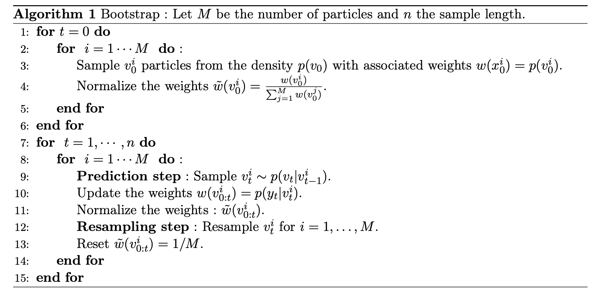

où \(W_s^1\) et \(W_s^2\) sont deux mouvements browniens et \(r\) est le taux sans risque. Pour ce modèle, les rendements sont modélisés par un mouvement brownien géométrique avec une variance stochastique.
La volatilité non observée \(v_t\) est déterminée par un processus stochastique de retour à la moyenne (1) introduit en 1985 par Cox, Ingersoll et Ross pour la modélisation des taux d’intérêt à court terme.
Le paramètre \(\kappa\) est le paramètre de retour à la moyenne positive, \(\beta\) est le paramètre positif à long terme et \(\eta\) la volatilité positive du paramètre de variance. De plus, Heston a introduit une corrélation entre les deux mouvements browniens \(W_s^1\) et \(W_s^2\), représentée par le paramètre \(\rho\) appartenant à \([-1,1]\).
Pricing d’un call
Avec la forme close
Soit un Call de strike K et à échéance \(\tau\) sous le modèle (1) avec les paramètres suivants : \(\kappa\) = 4,\(\beta\) = 0.03,\(\sigma\) = 0.4,r =0.05,\(\rho\)=−0.5,\(\tau\) = 1, \(S_0\) = K=100,\(v_0\) = \(\beta\).
Pour calculer le prix d’un Call, on peut utiliser la formule close de Heston (Heston 1993) :
Pour ce faire, nous allons utiliser la fonction Heston_Call_Function.R qui permet de calculer le prix d’un Call sous le modèle d’Heston avec la formule close.
# Paramètreskappa <-4beta <-0.03sigma <-0.4r <-0.05rho <--0.5tau <-1S0<-100K <-100v0 <- beta# Import Heston_Call_Function.Rsource("data/Heston_Call_Function.R")# Calcul du prix du CallCall_Heston <-HestonCallClosedForm(lambda = kappa, vbar = beta, eta = sigma, rho = rho, v0 = v0, r = r, tau = tau, S0 = S0, K = K)cat("Le prix du Call est de ", Call_Heston)
Le prix du Call est de 9.410405
Avec la méthode de Monte Carlo (Schéma d’Euler)
Lorsqu’on a pas accès à la formule close, on peut utiliser la méthode de Monte Carlo pour calculer le prix d’un Call. Il s’agit de simuler le modèle (1) et de calculer le prix du Call à partir des simulations. Pour simuler le modèle (1), on peut utiliser la discrétisation d’Euler du modèle de Heston (Euler and Milstein Discretization, Fabrice Douglas Rouah) ou utiliser la formule de Ito pour le modèle de Heston.
Dans notre cas, nous allons utiliser la discrétisation d’Euler du modèle de Heston pour simuler le modèle (1) comme suit : \[
\begin{cases}
S_t = S_{t-1} \left(1 + r \Delta + \sqrt{\Delta v_t} W_t^1 \right) \\[10pt]
v_t = \left| v_{t-1} + \kappa \Delta (\beta - v_{t-1}) + \sigma \sqrt{v_{t-1}} \Delta W_t^2 \right| \\[10pt]
\text{Cov}(W_t^1, W_t^2) = \rho
\end{cases}
\]
avec \(W_t^1\) et \(W_t^2\) des variables aléatoires gaussiennes centrées réduites et corrélées entre elles telles que \(\text{Cov}(W_t^1, W_t^2) = \rho\). De plus, \(\Delta = \frac{\tau}{n}\) est le pas de discrétisation, avec \(n\) le nombre de pas de discrétisation.
Dans notre cas, on définit \(n = 100\) et on simule \(M = 1000\) modèle (1) pour calculer le prix d’un Call.
HestonCallMC <-function(M, N, lambda, vbar, eta, rho, v0, r, tau, S0, K){# M: Number of Monte Carlo simulations# N: Number of time stepsset.seed(123) dt <- tau / N # Time step# Store final stock prices ST <-numeric(M)for (i in1:M){ S <-numeric(N+1) v <-numeric(N+1) S[1] <- S0 v[1] <- v0for (t in1:N){# Generate correlated Brownian motions W1 <-rnorm(1) W2 <- rho * W1 +sqrt(1- rho^2) *rnorm(1)# Euler discretization of variance process (ensure non-negativity) v[t+1] <-abs(v[t] + lambda * (vbar - v[t]) * dt + eta *sqrt(v[t] * dt) * W1)# Euler discretization of the stock price process (log-normal form) S[t+1] <- S[t] *exp((r -0.5* v[t]) * dt +sqrt(v[t] * dt) * W2) }# Store final stock price ST[i] <- S[N+1] }# Compute Call option price using Monte Carlo method Call <-exp(-r * tau) *mean(pmax(ST - K, 0), na.rm=TRUE)return(Call)}M <-1000N <-100Call_Heston <-HestonCallMC(M,N, kappa, beta, sigma, rho, v0, r, tau, S0, K)cat("Le prix du Call est de ", Call_Heston)
Le prix du Call est de 9.797915
Calibration du modèle d’Heston avec les prix d’options
On souhaite désormais calibrer la volatilité sous le modèle d’Heston à partir de prix d’options. Pour cela, nous considérons la version discrétisée par un schéma d’Euler (modifié) de (1). Plus précisément, soit :
Prenons \(\theta = (\kappa = 4, \sigma = 0.4, \beta = 0.03, \rho = -0.5)\), \(\sigma_\varepsilon = 0.1\), \(\tau=1\) et \(K=100\). Pour estimer la volatilité, nous allons utiliser un filtre particulaire bootstrap. Il est défini comme suit :

Filtre bootstrap particulaire
La loi stationnaire de \(v_t\) est une loi gamma de paramètres \(\alpha_1 = \frac{2 \kappa \beta}{\sigma^2}\) et \(\alpha_2 = \frac{\sigma^2}{2 \kappa}\).
De plus, la densité de transition de \(v_t | v_{t-1}\) est une loi normale de moyenne \(v_{t-1} + \kappa (\beta - v_{t-1}) \tau\) et de variance \(\sigma \sqrt{v_{t-1} \tau}\). En effet, nous utilisons le schéma d’Euler pour simuler \(v_t\).
En ce qui concerne la loi de \(y_t | v_t\), on suppose que \(y_t\) suit une loi normale de moyenne \(C(t, \theta, v_t, S_t, K, \tau)\) et de variance \(\sigma_\varepsilon^2\).
Ainsi, nous initialisons les particules \(v_0\) selon la loi stationnaire de \(v_t\) et nous utilisons le schéma d’Euler pour simuler \(v_t\) et \(S_t\). Ensuite, nous calculons les poids des particules en utilisant la vraisemblance de l’observation \(y_t\) et nous rééchantillonnons les particules selon leurs poids. Enfin, nous estimons la volatilité \(v_t\) à l’instant \(t\) en utilisant les particules rééchantillonnées.
# Definition des variablesy <- y$HestonPBS <- S$Sous_jacentv<- v$Var
set.seed(123) # Pour rendre les simulations reproductibles# Définition des paramètres thetakappa <-4sigma <-0.4beta <-0.03rho <--0.5sigma_epsilon <-0.1tau <-1K <-100r <-0.05# Import Heston_Call_Function.Rsource("data/Heston_Call_Function.R")# Paramètres loi stationnaire de valpha1 <- (2*kappa*beta)/(sigma^2)alpha2 <- (sigma^2)/(2*kappa)# Initialisation des paramètresn <-length(y) # Nombre d'observationsM <-1000# Nombre de particules# Initialisation des matrices et vecteursv_hat <-numeric(n) # Estimation de xv_particle <-matrix(nrow = n, ncol = M) # Particulesw <-matrix(nrow = n, ncol = M) # Poids des particulesw_normalized <-matrix(nrow = n, ncol = M) # Poids normalisés# Filtre particulaire bootstrapfor (t in1:n) {if (t ==1) {# Initialisation des particules à t = 0 v_particle[t, ] <-rgamma(M, shape = alpha1, rate =1/alpha2)# Poids initiaux (basés sur la distribution de l'état initial) w[t, ] <-dgamma(v_particle[t, ], shape = alpha1, rate =1/alpha2)# Normalisation des poids w_normalized[t, ] <- w[t, ] /sum(w[t, ])# Estimation initiale v_hat[t] <-sum(w_normalized[t, ] * v_particle[t, ]) } else {# Étape de prédiction (échantillonnage de nouvelles particules) v_particle[t,] <-abs(rnorm(M, mean = v_particle[t-1, ] + kappa * (beta - v_particle[t-1, ]) * tau, sd = sigma *sqrt(v_particle[t-1, ] * tau)))# Calcul du prix du Call pour chaque particule C <-numeric(M)for (i in1:M) { C[i] <-HestonCallClosedForm(lambda = kappa, vbar = beta, eta = sigma, rho = rho, v0 = v_particle[t,i], r = r, tau = tau, S0 = S[t], K = K) }# Mise à jour des poids avec la vraisemblance de l'observation w[t, ] <-dnorm(y[t], mean = C , sd =sqrt(sigma_epsilon))# Normalisation des poids w_normalized[t, ] <- w[t, ] /sum(w[t, ])# Rééchantillonnage des particules selon leurs poids index <-sample(1:M, size = M, prob = w_normalized[t, ], replace =TRUE) v_particle[t, ] <- v_particle[t, index]# Réinitialisation des poids après rééchantillonnage (uniforme) w_normalized[t, ] <-1/ M# Estimation de x à l'instant t (pondérée) v_hat[t] <-sum(w_normalized[t, ] * v_particle[t, ]) }}
plot(v, type ="l", col ="black", main ="Estimation de la volatilité avec un filtre bootstrap",xlab ="Temps", ylab ="Volatilité")lines(v_hat, type ="l", col ="red")legend("topright", legend =c("Vol. obs.", "Vol. est."), col =c("black", "red"), lty =1)